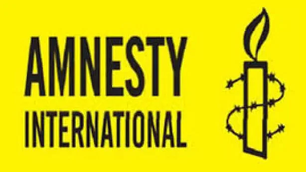

বাংলাদেশের জন্য ৪৭০ কোটি মার্কিন ডলারের ঋণ প্রস্তাব অনুমোদনের প্রায় তিন মাস পর আন্তর্জাতিক মুদ্রা তহবিল (আইএমএফ) তাদের স্টাফ কনসালটেশন মিশন পাঠাচ্ছে ঢাকায়। মূলত বাজেট-সহায়তা হিসেবে দেওয়া অর্থের ... ১২ বছরের বেশি এর মধ্যে গাজীপুর সিটি নির্বাচন দল যাঁকে মনোনয়ন দেবে, তাঁর জন্য নির্বাচন করব: আজমত উল্লা খান প্রতিটা নির্বাচন কিন্তু প্রতিযোগিতামূলক হয়েছে। সেই নির্বাচনগুলোতে রাজনৈতিক সিদ্ধান্ত নিয়ে বিএনপি অংশগ্রহণ করেনি। হয়তো তারা নির্বাচনে প্রতীকটা নেয়নি, কিন্তু নির্বাচন তারা করেছে। তারা নির্বাচন না করলেও ... ১২ বছরের বেশি এর মধ্যে
বাংলাদেশের জন্য ৪৭০ কোটি মার্কিন ডলারের ঋণ প্রস্তাব অনুমোদনের প্রায় তিন মাস পর আন্তর্জাতিক মুদ্রা তহবিল (আইএমএফ) তাদের স্টাফ কনসালটেশন মিশন পাঠাচ্ছে ঢাকায়। মূলত বাজেট-সহায়তা হিসেবে দেওয়া অর্থের ... ১২ বছরের বেশি এর মধ্যে গাজীপুর সিটি নির্বাচন দল যাঁকে মনোনয়ন দেবে, তাঁর জন্য নির্বাচন করব: আজমত উল্লা খান প্রতিটা নির্বাচন কিন্তু প্রতিযোগিতামূলক হয়েছে। সেই নির্বাচনগুলোতে রাজনৈতিক সিদ্ধান্ত নিয়ে বিএনপি অংশগ্রহণ করেনি। হয়তো তারা নির্বাচনে প্রতীকটা নেয়নি, কিন্তু নির্বাচন তারা করেছে। তারা নির্বাচন না করলেও ... ১২ বছরের বেশি এর মধ্যে
chake to the next page যুক্তরাজ্যভিত্তিক আন্তর্জাতিক মানবাধিকার সংস্থা অ্যামনেস্টি ইন্টারন্যাশনাল বলেছে, বাংলাদেশের সর্ববৃহৎ দৈনিক সংবাদপত্র প্রথম আলো আক্রমণের লক্ষ্যবস্তু হয়েছে। দেশটিতে গণমাধ্যমের ওপর বাড়তে থাকা আক্রমণের সর্বশেষ ঘটনা এটি। সেখানে গণমাধ্যমকে ভয় দেখানো, হয়রানি ও সাংবাদিকদের গ্রেপ্তারের মতো বিষয়গুলো রয়েছে। প্রথম আলোর ওপর এই আক্রমণ বাংলাদেশে গণমাধ্যমের স্বাধীনতার সংকট গভীর হওয়ার ইঙ্গিত দিচ্ছে। আজ বুধবার অ্যামনেস্টি ইন্টারন্যাশনালের ওয়েবসাইটে এক প্রতিবেদনে এ কথা বলা হয়েছে।
অ্যামনেস্টি বলেছে, বাংলাদেশের প্রধানমন্ত্রী শেখ হাসিনা সোমবার জাতীয় সংসদে ভাষণে প্রথম আলোকে ‘আওয়ামী লীগের শত্রু, গণতন্ত্রের শত্রু এবং দেশের মানুষের শত্রু’ বলেছেন। তিনি এ কথা বলেছেন স্বাধীনতা দিবসে জীবনযাত্রার ব্যয় নিয়ে প্রকাশিত একটি প্রতিবেদনের সূত্র ধরে। ওই প্রতিবেদনের প্রতিবেদক শামসুজ্জামানকে আটক করে তাঁর বিরুদ্ধে দেশের কঠোরতম আইন ডিজিটাল নিরাপত্তা আইনে (ডিএসএ) মামলা দেওয়া হয়। পরে তিনি জামিনে মুক্ত হন। প্রথম আলোর সম্পাদক মতিউর রহমানের বিরুদ্ধেও ডিজিটাল নিরাপত্তা আইনে মামলা দেওয়া হয়েছে। শামসুজ্জামানের বিরুদ্ধে যে দুটি মামলা হয়েছে, তার একটিতে প্রথম আলো সম্পাদককে
অ্যামনেস্টি বলেছে, বাংলাদেশের প্রধানমন্ত্রী শেখ হাসিনা সোমবার জাতীয় সংসদে ভাষণে প্রথম আলোকে ‘আওয়ামী
অ্যামনেস্টি বলেছে, বাংলাদেশের প্রধানমন্ত্রী শেখ হাসিনা সোমবার জাতীয় সংসদে ভাষণে প্রথম আলোকে ‘আওয়ামী লীগের শত্রু, গণতন্ত্রের শত্রু এবং দেশের মানুষের শত্রু’ বলেছেন। তিনি এ কথা বলেছেন স্বাধীনতা দিবসে জীবনযাত্রার ব্যয় নিয়ে প্রকাশিত একটি প্রতিবেদনের সূত্র ধরে। ওই প্রতিবেদনের প্রতিবেদক শামসুজ্জামানকে আটক করে তাঁর বিরুদ্ধে দেশের কঠোরতম আইন ডিজিটাল নিরাপত্তা আইনে (ডিএসএ) মামলা দেওয়া হয়। পরে তিনি জামিনে মুক্ত হন। প্রথম আলোর সম্পাদক মতিউর রহমানের বিরুদ্ধেও ডিজিটাল নিরাপত্তা আইনে মামলা দেওয়া হয়েছে। শামসুজ্জামানের বিরুদ্ধে যে দুটি মামলা হয়েছে, তার একটিতে প্রথম আলো